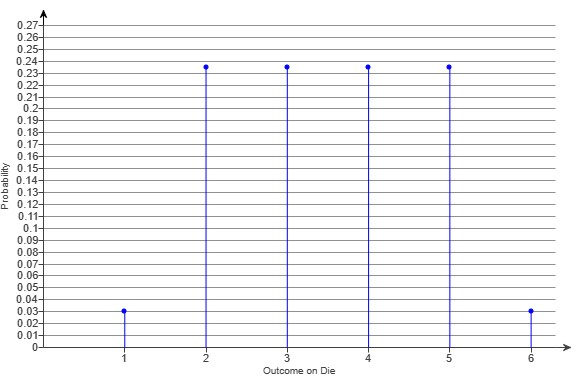
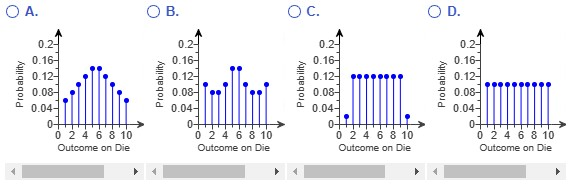
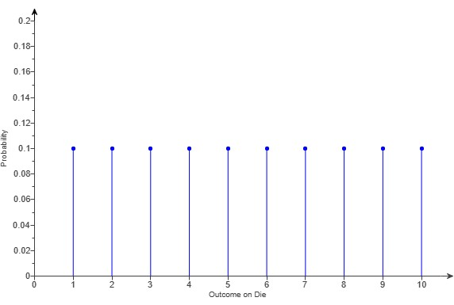
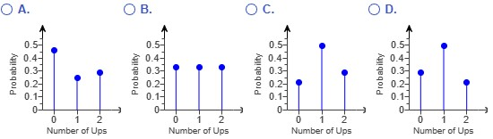
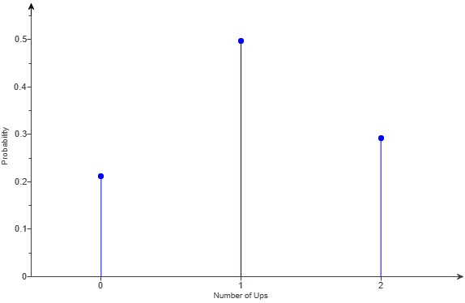
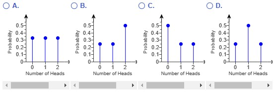
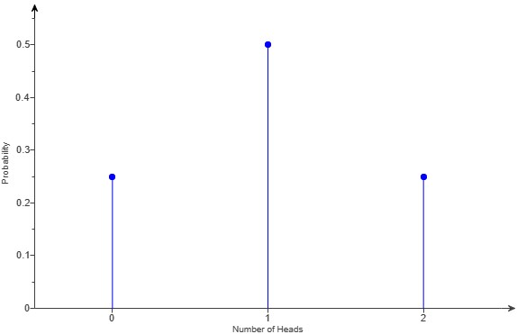

If there is one prayer that you should pray/sing every day and every hour, it is the
LORD's prayer (Our
FATHER in Heaven prayer)
- Samuel Dominic Chukwuemeka
It is the most powerful prayer.
A pure heart, a clean mind, and a clear conscience is necessary for it.
For in GOD we live, and move, and have our being.
- Acts 17:28
The Joy of a Teacher is the Success of his Students.
- Samuel Chukwuemeka
Prerequisite Topics
Probability Distribution Calculators
Texas Instruments (TI) calculators for Probability
For ACT Students
The ACT is a timed exam...60 questions for 60 minutes
This implies that you have to solve each question in one minute.
Some questions will typically take less than a minute a solve.
Some questions will typically take more than a minute to solve.
The goal is to maximize your time. You use the time saved on those questions you
solved in less than a minute, to solve the questions that will take more than a minute.
So, you should try to solve each question correctly and timely.
So, it is not just solving a question correctly, but solving it correctly on time.
Please ensure you attempt all ACT questions.
There is no negative penalty for any wrong answer.
For WASSCE Students
Any question labeled WASCCE is a question for the WASCCE General Mathematics
Any question labeled WASSCE-FM is a question for the WASSCE Further Mathematics/Elective Mathematics
For NSC Students
For the Questions:
Any space included in a number indicates a comma used to separate digits...separating multiples of three digits
from behind.
Any comma included in a number indicates a decimal point.
For the Solutions:
Decimals are used appropriately rather than commas
Commas are used to separate digits appropriately.
Solve all questions.
Show all work.
| HH | HT | TH | TT | |
|---|---|---|---|---|
| HH | HHHH | HHHT | HHTH | HHTT |
| HT | HTHH | HTHT | HTTH | HTTT |
| TH | THHH | THHT | THTH | THTT |
| TT | TTHH | TTHT | TTTH | TTTT |
| $x$ | $P(x)$ | $x * P(x)$ |
|---|---|---|
| $0$ | $\dfrac{1}{16}$ | $0$ |
| $1$ | $\dfrac{4}{16}$ | $\dfrac{4}{16}$ |
| $2$ | $\dfrac{6}{16}$ | $\dfrac{12}{16}$ |
| $3$ | $\dfrac{4}{16}$ | $\dfrac{12}{16}$ |
| $4$ | $\dfrac{1}{16}$ | $\dfrac{4}{16}$ |
| $\Sigma x = 10$ | $\Sigma[x * P(x)] = \dfrac{32}{16} = 2$ |
| $x$ | $0$ | $1$ | $2$ | $3$ |
|---|---|---|---|---|
| $P(x)$ | $0.141$ | $0.389$ | $0.359$ | $0.111$ |
| $x$ | $P(x)$ | $x * P(x)$ | $x^2$ | $x^2 * P(x)$ |
|---|---|---|---|---|
| $0$ | $0.141$ | $0$ | $0$ | $0$ |
| $1$ | $0.389$ | $0.389$ | $1$ | $0.389$ |
| $2$ | $0.359$ | $0.718$ | $4$ | $1.436$ |
| $3$ | $0.111$ | $0.333$ | $9$ | $0.999$ |
| $\Sigma[x * P(x)] = 1.44$ | $\Sigma[x^2 * P(x)] = 2.824$ | |||
| $x$ | $P(x)$ |
| $0$ | $0.003$ |
| $1$ | $0.016$ |
| $2$ | $0.038$ |
| $3$ | $0.113$ |
| $4$ | $0.209$ |
| $5$ | $0.235$ |
| $6$ | $0.203$ |
| $7$ | $0.116$ |
| $8$ | $0.043$ |
| $9$ | $0.013$ |
| $10$ | $0.011$ |
| $x$ | $P(x)$ | $x * P(x)$ | $x^2$ | $x^2 * P(x)$ |
|---|---|---|---|---|
| $0$ | $0.003$ | $0$ | $0$ | $0$ |
| $1$ | $0.016$ | $0.016$ | $1$ | $0.016$ |
| $2$ | $0.038$ | $0.076$ | $4$ | $0.152$ |
| $3$ | $0.113$ | $0.339$ | $9$ | $1.017$ |
| $4$ | $0.209$ | $0.836$ | $16$ | $3.344$ |
| $5$ | $0.235$ | $1.175$ | $25$ | $5.875$ |
| $6$ | $0.203$ | $1.218$ | $36$ | $7.308$ |
| $7$ | $0.116$ | $0.812$ | $49$ | $5.684$ |
| $8$ | $0.043$ | $0.344$ | $64$ | $2.752$ |
| $9$ | $0.013$ | $0.117$ | $81$ | $1.053$ |
| $10$ | $0.011$ | $0.110$ | $100$ | $1.100$ |
| $\Sigma[x * P(x)] = 5.043$ | $\Sigma[x^2 * P(x)] = 28.301$ | |||
| $x$ | $P(x)$ |
| $0$ | $0.000$ |
| $1$ | $0.003$ |
| $2$ | $0.016$ |
| $3$ | $0.054$ |
| $4$ | $0.121$ |
| $5$ | $0.193$ |
| $6$ | $0.226$ |
| $7$ | $0.193$ |
| $8$ | $0.121$ |
| $9$ | $0.054$ |
| $10$ | $0.016$ |
| $11$ | $0.003$ |
| $12$ | $0.000$ |

| Number of spots | 1 | 2 | 3 | 4 | 5 | 6 |
| Probability | 0.03 | 0.235 | 0.235 | 0.235 | 0.235 | 0.03 |
| Event | $x$ | $P(x)$ | $x * P(x)$ |
|---|---|---|---|
| Lose the game | $-1.35$ | $\dfrac{999}{1000}$ | $-1.34865$ |
| Win the game | $486.40$ | $\dfrac{1}{1000}$ | $0.4864$ |
| $\Sigma[x * P(x)] = -0.86225$ | |||
| Number of spots | 1 | 2 | 3 | 4 | 5 | 6 | 7 | 8 | 9 | 10 |
| Probability | $\dfrac{1}{10}$ | $\dfrac{1}{10}$ | $\dfrac{1}{10}$ | $\dfrac{1}{10}$ | $\dfrac{1}{10}$ | $\dfrac{1}{10}$ | $\dfrac{1}{10}$ | $\dfrac{1}{10}$ | $\dfrac{1}{10}$ | $\dfrac{1}{10}$ |


| Outcomes | UU | UD | DU | DD |
| Probability | 0.2916 | 0.2484 | 0.2484 | 0.2116 |


| Outcomes | HH | HT | TH | TT |
| Probability | 0.25 | 0.25 | 0.25 | 0.25 |

